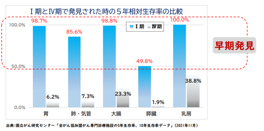
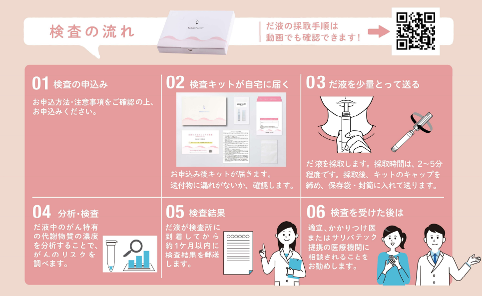

診
診断時の一時金
診断を受けたとき、まとまった費用に備えられる内容かを確認します。
CANCER AWARENESS & CARE
がんの仕組みを知り、日々の検診に加えて自宅でできるリスク検査や、もしものときの保障を考える。今日から始められる3つの備えをご案内します。
こちらからの申し込みはSOMPOひまわり生命保険様のサイトへリンクしております
01 / UNDERSTAND
体の細胞は日々入れ替わっています。その過程で遺伝子に変化が起こり、増殖のコントロールが効かなくなった細胞が増え続けることで、がんにつながることがあります。
古くなった細胞を補うため、体の中では細胞分裂が繰り返されています。
細胞分裂や外的要因などにより、遺伝子に偶然「傷」が生じることがあります。
多くは修復・排除されますが、複数の変異が蓄積する場合があります。
増殖が止まらなくなり、周囲へ広がることで悪性腫瘍になります。
添付資料では、早期のⅠ期と進行したⅣ期で5年相対生存率に大きな差が示されています。検診や人間ドックなど、自分に合った方法で定期的に体の状態を確認することが大切です。
※生存率は、がんの種類、年齢、体の状態、治療内容などにより異なります。

02 / CHECK
「検査は大切。でも病院へ行く時間がない」「採血や内視鏡検査は少し不安」。そんな方が、日々の健康管理を考えるきっかけとして使える唾液によるリスク検査です。
SALIVACHECKER®

サリバチェッカーは、がんを診断する検査ではなく、採取時点のがんリスクを評価する検査です。低リスクでもがんが存在する可能性があり、高リスクでも必ずがんであるとは限りません。健康診断・人間ドック・各種がん検診の代わりになるものではありません。
03 / PREPARE
がんへの備えは、検査だけではありません。治療費や通院、働き方の変化など、万一のときにも生活を続けられるよう、現在の保障内容を確認してみましょう。
診断を受けたとき、まとまった費用に備えられる内容かを確認します。
入院だけでなく、通院治療や薬物療法などの対象範囲も確認します。
療養中の収入や固定費も含め、家計を支えられるかを考えます。
保障内容・保険料・給付条件は商品により異なります。ご自身とご家族に必要な備えを比較してご検討ください。
こちらからの申し込みはSOMPOひまわり生命保険様のサイトへリンクしております
※本ページは一般的な情報提供を目的としたもので、特定の保険商品の推奨や募集を行うものではありません。
ONE SMALL STEP, FOR YOUR FUTURE.